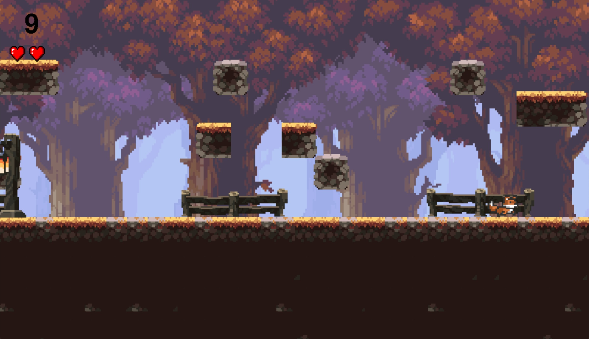

This is my first time building a full-scale website with JavaScript, HTML, and CSS. While I have a lot of experience working with these languages I have never had the opportunity to utilize them with such creativity. Throughout this entire process, I feel like I have learned a lot about not only web development but also myself as a creative. It is very difficult to decide what you want your website to look like Every decision from the scroll speed to the background color needs to be scrutinized. No matter how many example websites you look at it’s hard to find one that perfectly encapsulates what you want.
Building something for myself has also been a very valuable experience. Before building this website all of my work had been academically focused. Once I finished a project for a class, that was it, there was no more continuation of the project. There was also not as much motivation to produce a result you were proud of, as long as it passed the test cases you were good. Building a website, however, has been different. Throughout the day I am always thinking about things I could add to my website, different style choices I could implement, and just generally how to make it look nicer. It is more motivating to work on something that you know will benefit you.
Finally, working on this project has taught me a lot about branching out of my comfort zone. For years I have been petrified to publish any of my code or display any of my work for fear of criticism. The saying “it’s just not ready yet” has been a barrier for me to hide behind. I have come to realize that programming is a process, and while the current state of my work may not be exactly where I want it to be, I am learning more and more each day about how to improve it.
Pantri
Pantri is a machine learning mobile app made with Node.js, React Native, Python, and TensorFlow. Pantri scans a user's pantry for ingredients using image recognition and generate recipes specific to these ingredients.
Check it Out

HackIllinois 2023
I worked with another teamate at the University of Illinois at Urbana-Champaign's annual hackathon to build an infinite 2D sidescroller using Pygame.
Check it Out
Poker Game
I created a realistic poker game using Rust. The game simulates other player acitivity and simulated real game mechanics such as card dealing, hand evaluation, and running chip totals.
Check it Out